Hypnos Desktop: user manual
Rendered from docs/desktop-manual.md; edits go there.
Hypnos Desktop is a chat app for your own AI models. You talk to a chat model as you would to any assistant, and it can hand work to the other models on the same computer: it makes and edits images, reads documents and web pages, listens to your voice and answers aloud, and finds names, places and dates in a text. Everything runs on your machine, or on a Hypnos server you choose; nothing goes to a cloud service.
This manual covers version 0.7. The screenshots show a Mac with the default lineup of models.
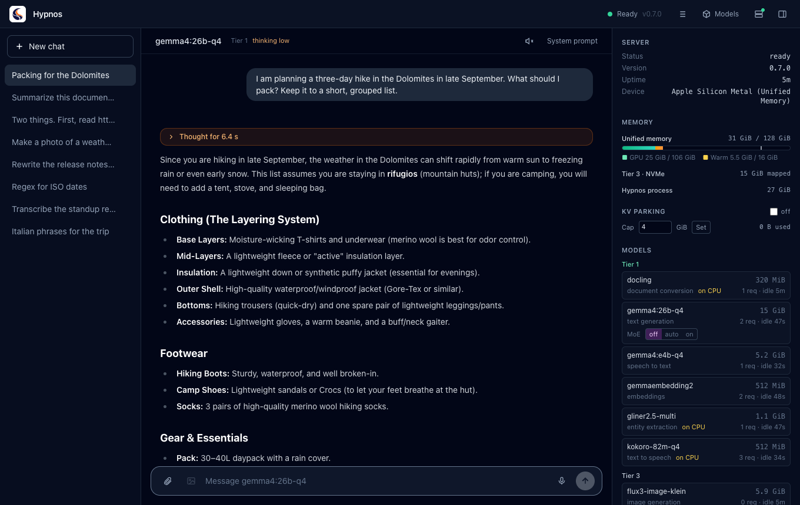
1. Installing#
Download the installer for your system from the GitHub releases:
| System | File | Server |
|---|---|---|
| macOS (Apple Silicon) | hypnos-desktop-<version>-macos-arm64.dmg |
included: the app starts it for you |
| Windows | -windows-x64.msi or -windows-x64.setup.exe |
included, with the CUDA runtime; needs an NVIDIA GPU (RTX 20 or newer) with driver 570 or newer, and the Microsoft Visual C++ 2015-2022 redistributable (x64) |
| Linux | -linux-x64.deb |
included; needs the same GPU and driver, the CUDA 12 runtime libraries (libcudart.so.12, libcublas.so.12) and libgomp1 installed, and glibc 2.39 or newer (Ubuntu 24.04+) |
| Linux | -linux-x64.AppImage |
not included: the app connects to a server you run (the archive or the Docker image), or starts an installed hypnos |
On a Mac, open the .dmg and drag Hypnos to Applications. On Windows, run the installer. On
Linux, install the .deb (sudo apt install ./hypnos-desktop-*.deb), or make the AppImage
executable and run it. The app carries its own server, so there is nothing else to install
(on Linux, the CUDA runtime from NVIDIA's repository: apt install cuda-cudart-12-8 libcublas-12-8); the AppImage is the exception and needs a server to talk to.
The app can also talk to a Hypnos server elsewhere: one you run on the same computer (the server release archive, or the Docker image) or one on another machine. Section 12 shows the local server dialog, section 11 the connection settings.
The release notes say whether the installers are signed. If they are not:
- macOS refuses the first open. Open System Settings > Privacy & Security and click Open Anyway next to the message about Hypnos.
- Windows shows "Windows protected your PC". Click More info, then Run anyway.
2. The first start#
The guided setup#
The first time you open the app it has no models yet, so it opens the guided setup. It recommends models that fit your computer and downloads them for you.
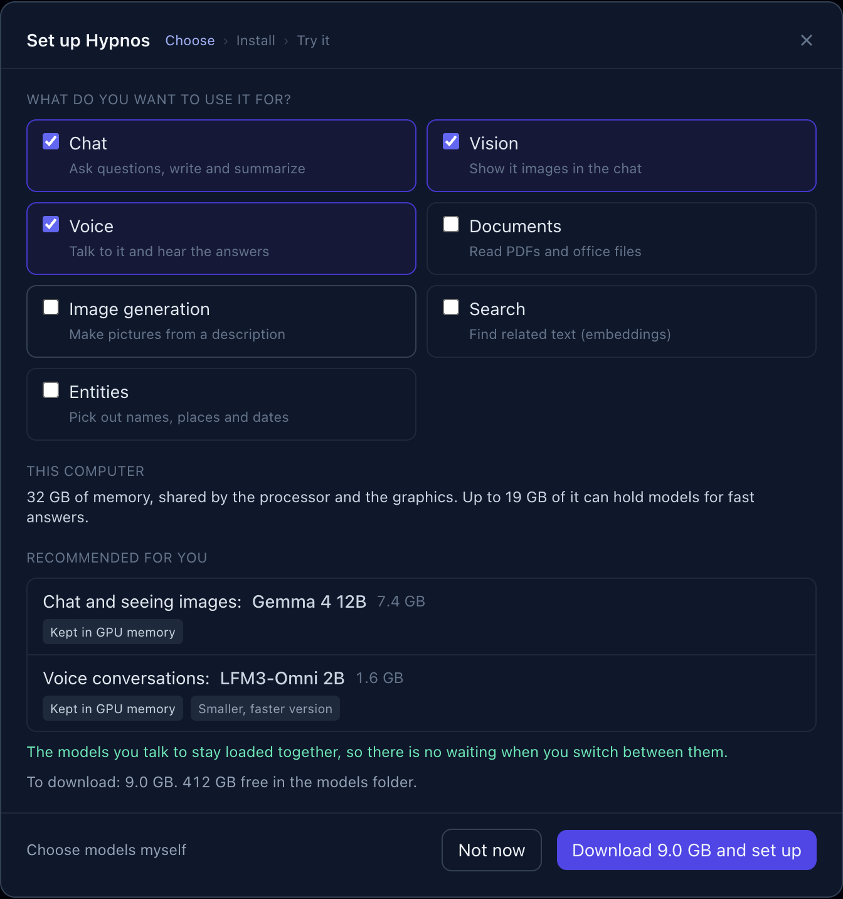
Tick what you want Hypnos for: Chat, Vision (showing it images), Voice (talking to it and hearing the answers), Documents, Image generation, Search and Entities. Chat, Vision and Voice are ticked to start with. Each extra use can add a model and a download.
Read the recommendation. "This computer" says how much memory the Mac has and how much of it can hold models. "Recommended for you" lists each model with what it does for you, its download size, and a note on how it runs:
- Kept in GPU memory: always loaded, so it answers at once.
- Loads when needed: loaded from disk the first time you use it (a few seconds).
- Runs on the processor: small helpers that need no graphics memory.
- Partly in GPU memory: slower: it fits only in part; answers come more slowly.
- Smaller, faster version: a lighter variant chosen so everything fits.
The green line under the list says whether the models you talk to stay loaded together, so that switching between them is instant.
Click "Download … and set up". The app downloads the files (you can stop and resume), sets up the server with the new models and restarts it.
Try it. Once the server is ready, the setup runs a short check with your new models: a chat answer, the Hypnos logo described by the vision model, and a spoken sentence heard back by the speech-to-text model. Each step shows how long it took.
"Choose models myself" opens the Models dialog instead (section 10). "Not now" closes the setup; open it again later from Models > Guided setup….
With another server#
Click the status in the top right (it says Unreachable until a server answers) to open the
Connection settings, enter the server's address (for example http://localhost:9999, or
http://192.168.1.20:9999 for another computer) and, if the server asks for one, its API key.
Click Test connection, then Save. See section 11.
The status#
The status in the header tells you where the server is:
| Status | Meaning |
|---|---|
| Connecting | the app is reaching the server |
| Warming up | the server is up and still loading its first models; chats wait until it is ready |
| Ready (green) | everything works; the server's version is shown next to it |
| Unreachable (red) | no server answers at that address |
| API key refused (red) | the server asks for a key and yours is missing or wrong |
The app keeps trying on its own: when the server comes back, the status turns green again.
3. A tour of the window#
- Header (top): the Hypnos logo; on the right, the status (click it for the Connection settings), the request log button (☰), Models, the local server button (a green dot when the app's server runs) and the button that shows or hides the server panel.
- Sidebar (left): New chat and your chats, newest first. Click one to open it; hover it and click × to delete it.
- Chat (middle): the conversation. Its header shows the chat model and where it is loaded (Tier 1 is the graphics memory, section 13), "thinking low/medium/high" when thinking is on, the speaker button and System prompt. At the bottom is the composer, where you type.
- Server panel (right): what the server is doing: memory, the models and where each one is, and the cost of the last answer (section 13). Hide it with the panel button or Cmd/Ctrl+.
4. Chatting#
Type in the composer and press Enter to send; Shift+Enter starts a new line. The answer streams in as the model writes it. Click Stop (the square that replaces the send arrow) to cut it short.
Under each answer you find:
- a line with the answer's speed: tokens per second, the time to the first word, the number of tokens, and where the model was loaded from when it had to load first (for example "loaded from Tier 2 in 1.0 s");
- Copy (the answer as text), Read aloud and Log (this answer's record in the request log, section 14);
- the regenerate arrow, which asks the same question again. Under one of your earlier messages it asks that one again and removes what came after it; the app asks before it removes anything.
Every chat answers with the default chat model. Change it in Models with "Make default for… → Chat" (section 10); the chat header shows which one it is.
System prompt (top right of the chat) gives the model standing instructions for this chat only, such as "Answer in Italian" or "You are a careful copy editor". A dot after the button means the chat has one.
Chats are saved on this computer as you go (section 18). New chat (Cmd/Ctrl+N) starts an empty one.
5. Thinking#
Some models can think before they answer: they reason step by step first, which helps with plans, comparisons, maths and tricky questions, and costs some time. The models that can do it show a Thinking menu on their row in Models (section 10): Off, Low, Medium or High. Each model keeps its own level, and the chat header shows "thinking low" (or medium, high) while it is on.
While the model thinks, its thoughts stream into an orange panel above the answer ("Thinking…"). When the answer starts, the panel folds to "Thought for N s"; click it to read the thoughts again.
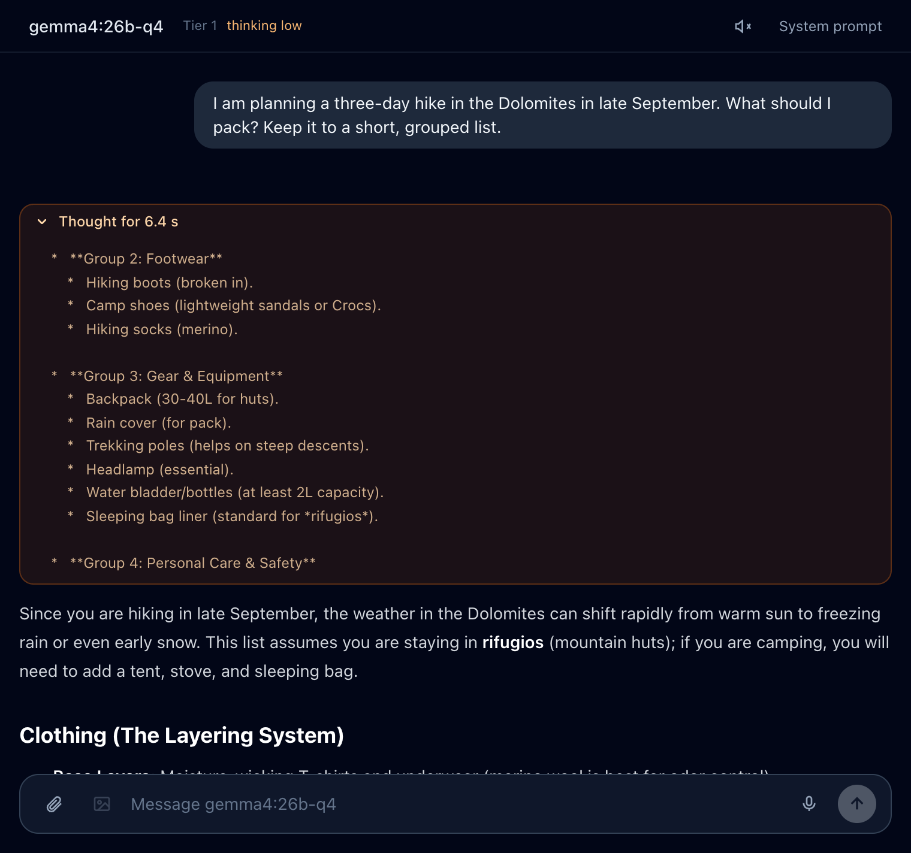
The thoughts are kept with the chat but never sent back to the model. Low, Medium and High give it about 500, 2,000 and 6,000 words' worth of thinking (tokens) before it must answer.
6. Files, links and attachments#
Add files with the paperclip, by dragging them onto the chat, or by pasting. Each file shows as a chip above the composer while the app prepares it; click a chip to see what was read from it.
| File | What the model gets |
|---|---|
| Images (PNG, JPEG, WebP, GIF, BMP, TIFF) | the picture, scaled to 1024 pixels. If the chat model cannot see, a model that can answers instead, and the answer says so |
| PDF, Word, PowerPoint, Excel, HTML | the text as Markdown, with tables, converted by the document model |
| Text and code files | the text as it is |
| Audio (WAV, MP3, M4A, FLAC, Ogg) | a transcript, made by the speech-to-text model |
| Video (MP4, MOV, MKV, WebM) | six frames from the video plus a transcript of its sound |
Documents and text are cut at about 60,000 characters (the chip says so). Attachments are saved with the chat.
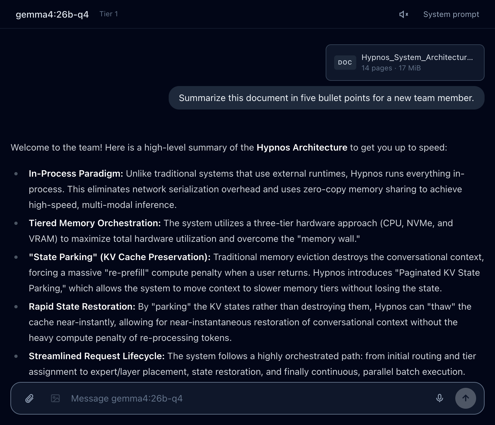
Links#
Type or paste a web address in the composer and a Read chip appears above it. Click it and
the app fetches the page or file (web pages, PDFs, office files, up to 50 MB) and adds its text
to your message with its title. Open the chip to copy the text, download it as a .md file,
or download the original file.
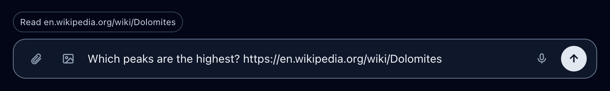
You can also just ask the chat model about a page ("what does example.com say about…"): with tools on, it reads the page itself (section 9).
7. Voice: speaking and listening#
Talking to Hypnos#
Click the microphone next to the send button to start recording and click it again (or Done) to stop, or hold it down while you speak and let go. A strip shows the time and your voice level; Esc or Cancel throws the recording away. The speech-to-text model turns what you said into text in the composer, so you can check it before you send. Tick send when done to send it straight away (the app remembers the choice). A recording stops by itself after 5 minutes.
The first time, macOS asks to let Hypnos use the microphone. If you refused, allow it in System Settings > Privacy & Security > Microphone.
Hearing the answers#
Click the speaker in the chat header to have every new answer read aloud as it arrives, sentence by sentence; click it again to stop. Read aloud under an answer reads that one. Code blocks are announced ("Code block.") instead of read, and links are read as their text. Sending a message, switching chats or Stop reading stops the voice. Choose the voice and the speed in Settings (section 11).
8. Images#
Ask the chat model for a picture in your own words ("draw a lighthouse at dawn", "make me a phone wallpaper of the Dolomites at night") and it asks the image model for it. The image appears in the answer, followed by a short comment.
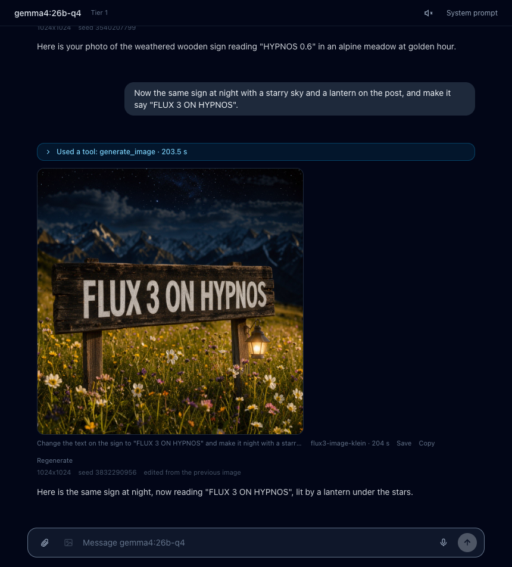
The chat model takes the details from what you write:
- The shape: "a phone wallpaper" becomes tall, "a banner" wide, or name the size ("1920x1080").
- What to leave out: "no text", "without people".
- How many: "give me three options" makes several, shown side by side.
- Quick or detailed: "a quick sketch" uses fewer steps, "the most detail" more.
- Changes to an image: "make it darker", "the same at night", "add a hat" edit the image made just before, or one you attached to your message. Editing needs an image model that can edit (FLUX.2 klein, FLUX.3); with another one you get a new image and a note saying so. Describe the change and what should stay ("keep the lighthouse and the framing").
- Styles such as black and white, watercolor, vintage film or pixel art go into the picture's description.
Under each image you see its description, the model and the time it took, and Save, Copy and Regenerate (the same settings with a new random start, so a different take). Below that is a line with the settings it was made with: size, seed (the random start that makes an image reproducible), steps, what was left out, and what it was edited from. The chat model knows these settings too, so "the same but wider" keeps the rest.
The image button in the composer (or typing /image followed by a description) sends the
text straight to the image model, without the chat model.
An image takes from tens of seconds to a few minutes, longer the first time, when the image model has to load (which can push the chat model out of memory for a while). The answer shows the time so far and where the model is loading from. Settings can stop the chat model from making images (section 11).
9. Tools: the chat model's helpers#
Besides images, the chat model can hand work to the other models:
| Tool | What it does | Done by |
|---|---|---|
fetch_url |
reads a web page or an online file you mention | the document model |
speak |
reads a text aloud ("say it out loud", "how do you pronounce…") | the speech model |
extract_entities |
lists names, organizations, places, dates or any kind of thing you ask for | the entity model |
describe_image |
looks at an image for a chat model that cannot see | a vision model |
generate_image |
makes or edits an image (section 8) | the image model |
A tool is offered only when a model that does its job is running. The chat model can use several at once, and they run at the same time.
Tool calls show in a blue panel above the answer. While a tool works the panel is open and says "Using fetch_url…"; afterwards it folds to a summary such as "Used 2 tools: fetch_url, extract_entities · 2.8 s". Click it to see each call: what the tool was asked (Input), what it gave back to the chat model (Output), which model did it and how long it took.
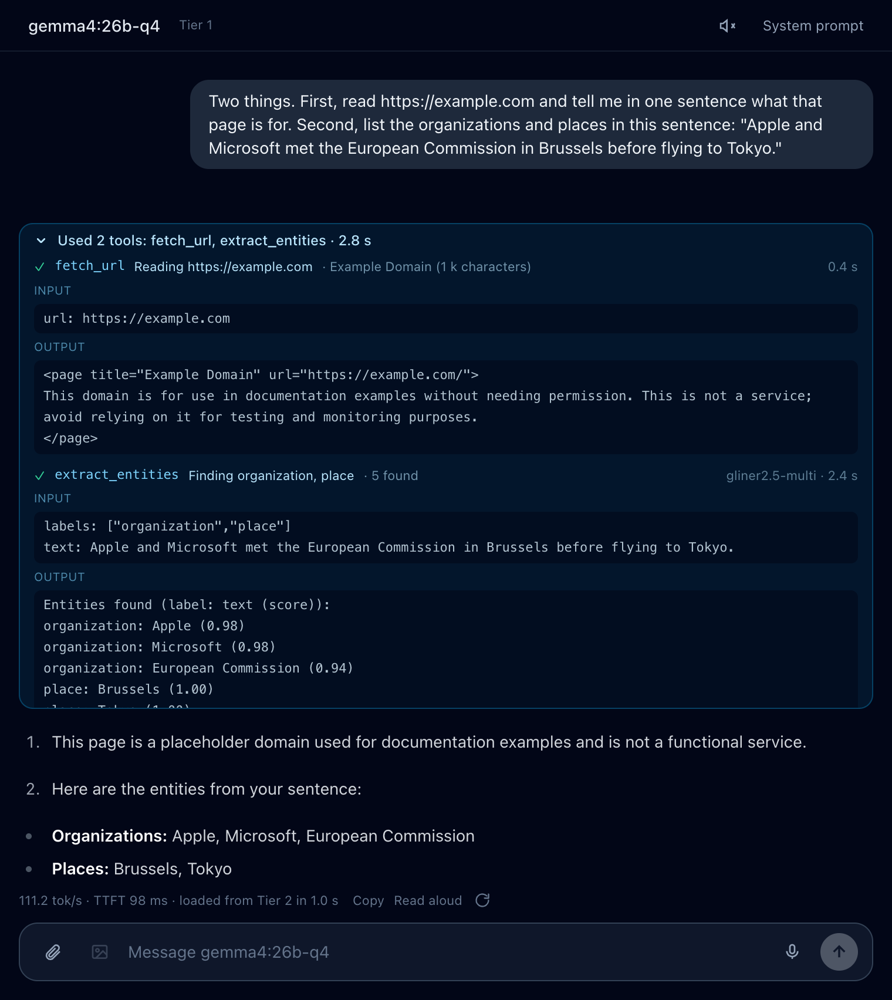
Settings can turn these tools off (section 11); the image tool has its own switch. Chat models that do not support tool calls can still make images, but do not get the other tools.
10. Choosing models#
Click Models in the header. The dialog shows the folder your models are in (with the free space) and two tabs: In use, what the server runs, and Catalog, models you can add.
In use: what the server runs#
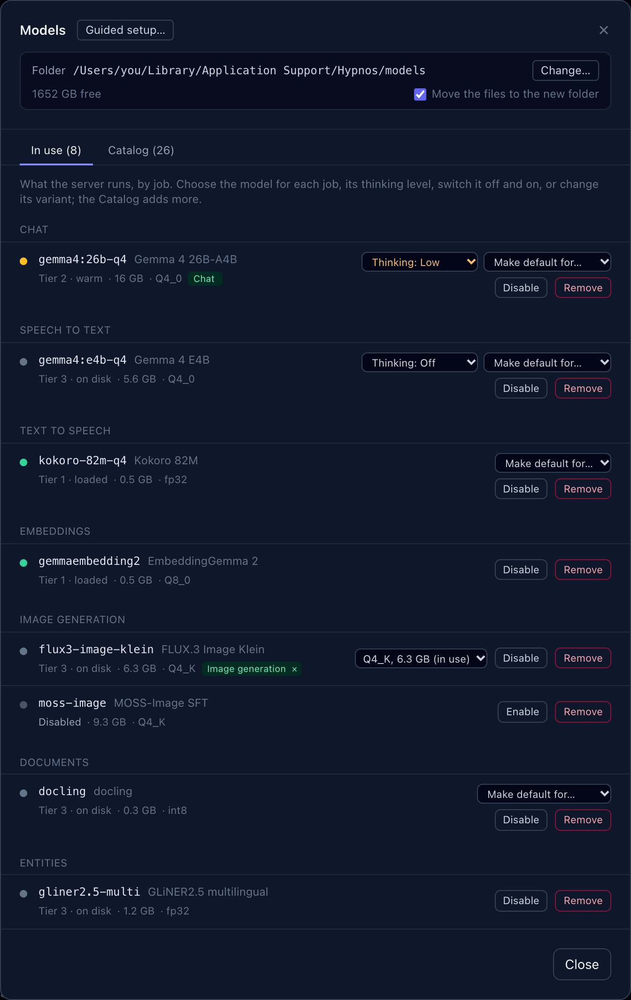
The models are grouped by their main job (Chat, Speech to text, Text to speech, Embeddings, Image generation, Documents, Entities). Each row shows:
- a dot and a line for where the model is: Tier 1 · loaded (green), Tier 2 · warm (amber) or Tier 3 · on disk (grey), see section 13. Or why it does not run: Disabled, Files missing, or Not on the server (it is in the configuration, but the server you are connected to does not run it);
- its size, the variant it runs (Q4_0, Q8_0, …) and green badges for the jobs it is the default for. The × on a badge gives the job back to the automatic choice (the chat model when it can do the job, else a model that is already loaded).
On the right:
- Thinking (on models that can think) sets how much the model reasons before it answers (section 5).
- Make default for… chooses this model for a job it can do: Chat (the model every chat answers with), images in messages, speech to text, text to speech, image generation, or documents and links. The change applies to the next request; no restart.
- Disable takes the model out of memory and refuses its requests until you Enable it again; it stays in the configuration.
- For models from the catalog: a variant menu with Replace (switch to another variant, downloading it if needed) and Remove (take it out of the server; its files stay on disk).
A model whose files are missing has a Download box: tick the ones you want and click Download at the bottom. Files resume where they stopped if you click Stop or lose the connection, and each file is checked when it arrives. The app then restarts its server so the models are used.
Change… moves your models to another folder (an external drive, for example); tick "Move the files to the new folder" to take the downloaded files along.
Catalog: models to add#
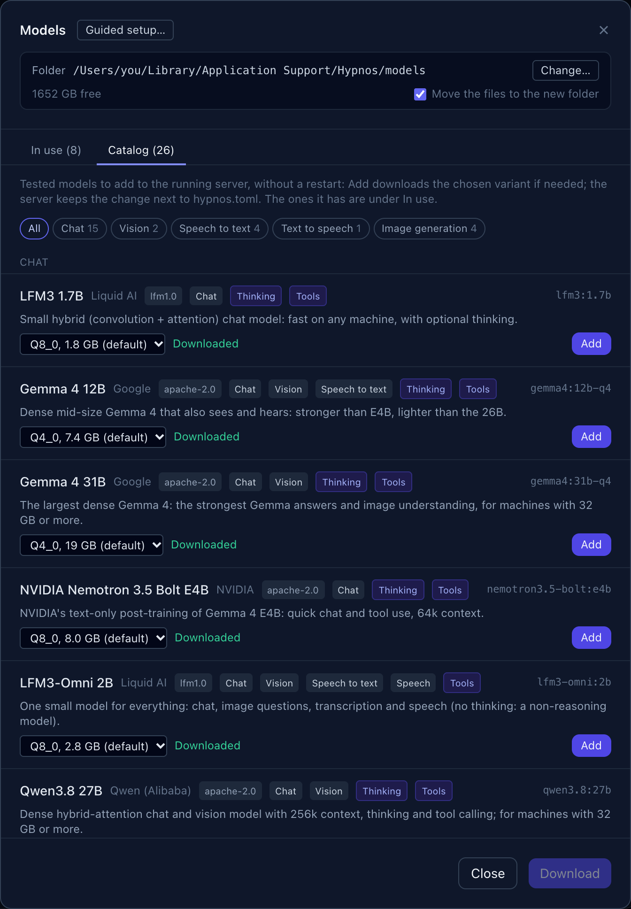
The catalog lists the tested models the server does not have yet, grouped by their main job: Chat, Vision, Speech to text, Text to speech, Embeddings, Image generation, Documents, Entities. The buttons above the list (All, Chat 15, Vision 2, …) show one group alone.
Each model shows its name, maker, license, what it does (Chat, Vision, Speech to text, …), Thinking and Tools when it supports them, and a short description. Pick a variant (a smaller one is faster and uses less memory, a larger one is a little better) and click Add: the app downloads it if needed and adds it to the running server, with no restart. It then appears under In use.
Some models come from repositories that need you to accept a license first, such as Black Forest Labs' FLUX originals. Their variants say needs a Hugging Face token: accept the license on the model's Hugging Face page, then save a read token in Settings (section 11).
Guided setup… at the top opens the guided setup again (section 2).
11. Settings#
Open them by clicking the status in the header, or with Cmd/Ctrl+, (comma).
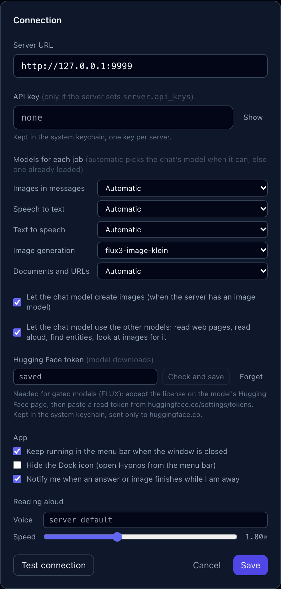
- Server URL: the address of the Hypnos server, such as
http://localhost:9999. - API key: only needed when the server asks for one. It is kept in your system's keychain (macOS Keychain, Windows Credential Manager, Secret Service on Linux), one key per server.
- Models for each job: the same choices as "Make default for…" in Models, for images in messages, speech to text, text to speech, image generation, and documents and links. Automatic uses the chat model when it can do the job, else a model that is already loaded.
- Let the chat model create images, and Let the chat model use the other models: the switches for the image tool and the other tools (section 9).
- Hugging Face token: for models from gated repositories. Paste a read token from huggingface.co/settings/tokens and click Check and save: the app asks Hugging Face whose token it is and keeps it in the keychain. It is only ever sent to huggingface.co. Forget removes it.
- App: keep Hypnos running in the menu bar (tray) when you close the window; hide the Dock icon (macOS); get a notification when an answer or image finishes while you are elsewhere.
- Reading aloud: the voice and the speed for answers read aloud.
Test connection tries the address and key before you save.
12. The local server#
The server button in the header (two stacked boxes) opens the Local server dialog. It runs a Hypnos server on this computer and connects the app to it.
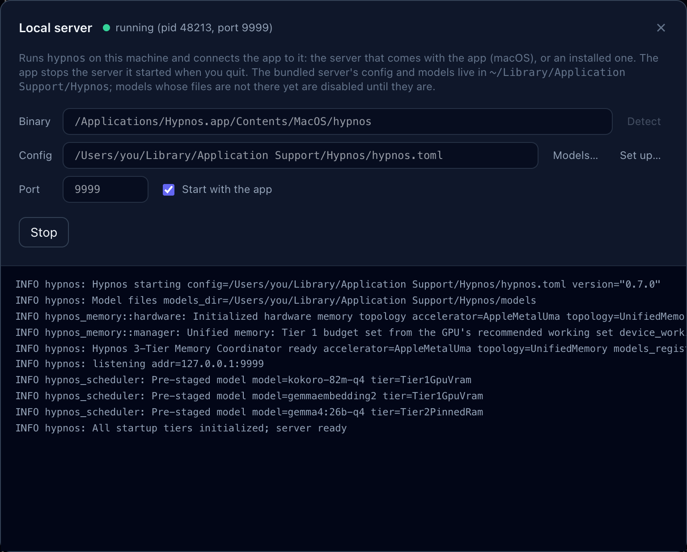
- Binary: the server program, the one inside the app. Detect finds it again (or an
installed
hypnosfor an app built without one), or enter a path. - Config: the server's configuration file. The app keeps its own in its data folder
(
~/Library/Application Support/Hypnos/hypnos.tomlon a Mac,%APPDATA%\Hypnos\hypnos.tomlon Windows,~/.local/share/Hypnos/hypnos.tomlon Linux). Models… and Set up… open the Models dialog and the guided setup for it. - Port: where the server listens (9999 unless you change it).
- Start with the app: starts the server when Hypnos opens, unless one already answers on that port, in which case the app simply connects to it.
- Start / Stop, and below them the server's output as it runs, which helps when it does not start.
When you quit, the app stops the server it started; it never stops a server it did not start. In the app's own config, models whose files are missing are switched off before each start (the server would refuse to start otherwise) and switched on again once their files are there.
13. The server panel#
The panel on the right shows what the server is doing. It refreshes every second and a half while it is open.
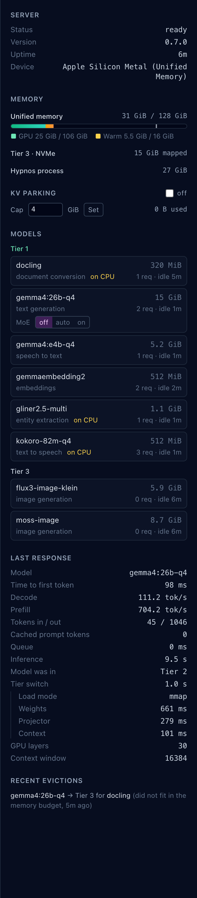
Hypnos keeps models in three places, called tiers:
| Tier | Where | Meaning |
|---|---|---|
| Tier 1 | the graphics memory (GPU) | loaded and ready: answers start at once |
| Tier 2 | reserved ("pinned") system memory | kept warm: moves to Tier 1 in about a second |
| Tier 3 | the disk | not loaded: the first request loads it, which takes a few seconds |
Hypnos moves models between the tiers by itself: it loads the one you need and sets aside the ones you have not used for a while.
- Server: its status, version, how long it has been running, and the device.
- Memory: on a Mac, one bar for the memory the graphics and the processor share (green: models in Tier 1, amber: models kept warm); on a PC, one bar for the graphics card and one for the reserved memory. Then how much is mapped from disk, and how much memory Hypnos uses in all.
- KV parking: when on, a conversation's working memory is kept when its model is set aside, so coming back to a long chat does not mean reading it all again. Cap limits how much memory it may use.
- Models: each model, grouped by tier, with its size, its job, "on CPU" for those that run
on the processor, how many requests it has served and how long it has been idle. For
Mixture-of-Experts models, MoE
off/auto/onkeeps part of the model in system memory (less graphics memory, slower answers). - Last response: what the latest answer cost: the time to the first word, the speed, the tokens, where the model was and how long loading it took, step by step.
- Recent evictions: which models were set aside, for which other model, and why.
14. The request log#
The ☰ button in the header (or Cmd/Ctrl+L) replaces the chat with the server's request log: every request with its time, route, model, status, duration, tokens, speed and tier.
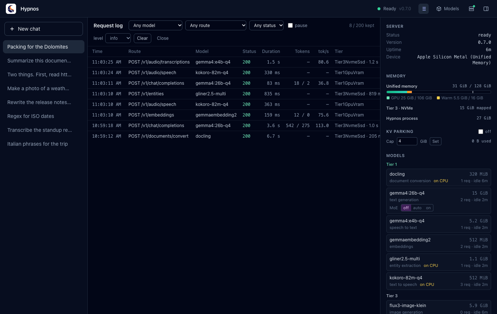
Filter by model, route or status; pause stops the refresh. Click a row to see the whole record, and Copy JSON to copy it.
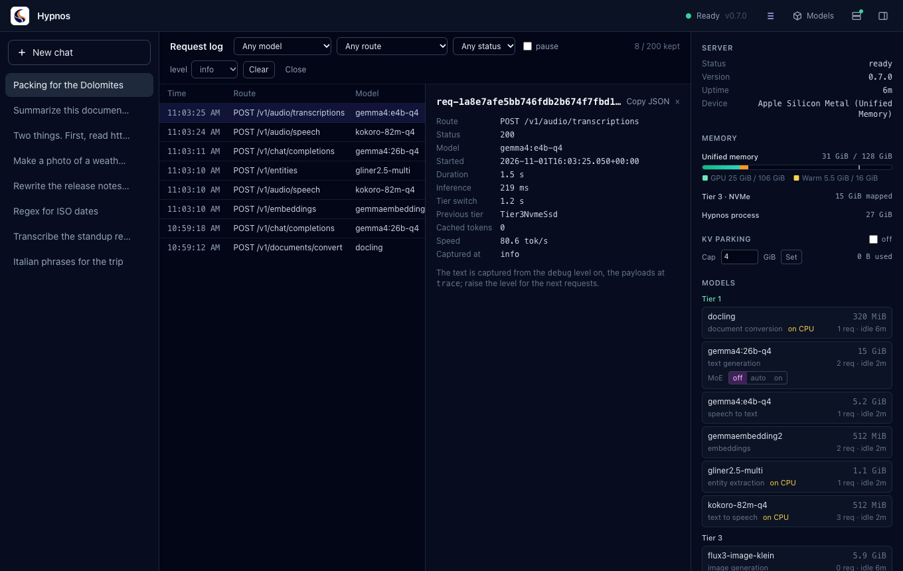
The level menu sets what the server records from now on: info keeps the numbers;
debug also keeps the text that went in and came out; trace keeps the full requests.
Clear empties the log for everyone using this server. Log under an answer opens that
answer's record directly.
15. The menu bar and notifications#
Hypnos puts its logo in the menu bar (macOS) or the system tray (Windows, Linux), with a dot for the server's state: green ready, amber loading, red unreachable or key refused, grey connecting. Click it to show or hide the window. Its menu has:
- the status and version, and Open Hypnos;
- Stop the server / Start the server, for a server running on this computer (also one you started yourself);
- Connection settings… and Quit.
Closing the window keeps Hypnos running in the menu bar, unless you turned that off in Settings. When an answer or an image finishes while the window is hidden or in the background, a notification tells you.
16. Keyboard shortcuts#
On Windows and Linux use Ctrl where the Mac uses Cmd.
| Shortcut | Action |
|---|---|
| Enter | send the message |
| Shift+Enter | new line in the message |
| Esc | cancel a recording |
| Cmd+N | new chat |
| Cmd+. | show or hide the server panel |
| Cmd+, | settings |
| Cmd+L | request log |
17. Troubleshooting#
The status says Unreachable. The server is not running or the address is wrong. On a Mac, open the Local server dialog and click Start; its output shows why it stops, if it does. Otherwise check the address in Settings and that the server is running.
API key refused. The server asks for a key. Enter it in Settings; it is saved per server.
Warming up for a long time. The server is loading its first models; large models take longer the first time after a restart. The server panel shows them arriving in Tier 1.
The first answer of the day is slow. Its model was on disk (Tier 3) and had to load: the line under the answer says "loaded from Tier 3 in …". Later answers are fast.
"Not enough memory to load this model right now." Other models are busy and cannot be set aside. Wait for them to finish, or use smaller models (the guided setup and the catalog's variants help with that).
An image takes minutes. Image models are large, and loading one can push the chat model out of memory; the answer shows where the model is loading from. Smaller image models (FLUX.2 klein, Iris) and fewer steps ("a quick sketch") are faster.
The microphone does nothing. Allow Hypnos in System Settings > Privacy & Security > Microphone (macOS), and check under Models > In use that a speech-to-text model runs.
A download says the repository is gated. Accept the model's license on its Hugging Face page with your account, then save a read token in Settings.
The app cannot read a file. Very large files, or formats the document model does not know, are refused with a message on the chip. Documents over about 60,000 characters are cut, and the chip says so.
Something else. Open the request log, find the request (status 4xx or 5xx), open it and
use Copy JSON: the record says what went wrong. Its id (req-…) identifies it in the
server's own log.
18. Where your data is kept#
| What | Where |
|---|---|
| Chats, the server address, your model choices | the app's data folder: ~/Library/Application Support/dev.hypnos.desktop/ (macOS), %APPDATA%\dev.hypnos.desktop\ (Windows), ~/.local/share/dev.hypnos.desktop/ (Linux) |
| API keys, the Hugging Face token | the system keychain |
| The bundled server's configuration and models | ~/Library/Application Support/Hypnos/ (macOS), %APPDATA%\Hypnos\ (Windows), ~/.local/share/Hypnos/ (Linux): hypnos.toml, models/, unless you moved the models |
| What the server records about requests | the server's memory only (the request log), until it restarts or is cleared |
Your chats never leave your computer except as requests to the Hypnos server you connected to.
To start over, delete the chats in the sidebar. You can also delete hypnos.toml in the Hypnos
folder above: the app writes a fresh one from its template at the next start.